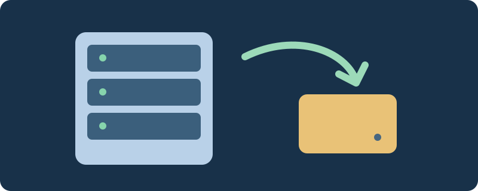

Privacy-first homelab
Resilient Homelab & Backups
Make your lab recoverable with deliberate backups, tested restores, and clear priorities.

Plan around recovery
Inventory irreplaceable files, service configuration, credentials and recovery dependencies. Decide which services matter most, how much data you can afford to lose, and how long each may be offline.
Keep multiple copies, including one isolated or offline and one off-site where practical. RAID and snapshots help with availability or recovery, but neither alone is a complete backup. Encrypt sensitive backups and protect the keys separately.
Practice a restore
- Choose a representative file, application configuration and, where appropriate, a virtual machine.
- Restore to a separate test location; verify the contents and that the application actually starts.
- Record elapsed time, gaps, required credentials and the date of the test. Schedule another test and monitor backup failures.
A UPS can provide time for an orderly shutdown; size and test it for your equipment rather than assuming it will keep everything running.
Useful references
See the Homelab guide for platforms and networking.